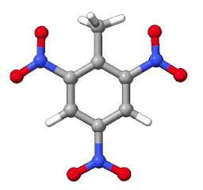

In these tutorials, we'll see how SEQCROW can be used to efficiently edit the substituents of
molecules. Some tutorials will make use of the 'Change Substituents' tool, while
others will use the substitute command. These tutorials contain links that
run ChimeraX commands to make some steps easier.
In this tutorial, we're going to make 1,3,5-trinitrotoluene starting from benzene using
SEQCROW's 'Change Substituents' tool. To begin, click the following command to open a
benzene structure from a SMILES string (requires internet access):
open smiles:C1=CC=CC=C1
Next, open the 'Change Substituents' tool using the ribbon at the top of the screen:
You may also click the command below to open the tool:
ui tool show "Change Substituents"
First, we'll be turning this benzene structure into toluene. Then, we'll add the nitro groups. To make toluene, we need to replace one of the hydrogens with a methyl substituent. In the 'substituent name:' box on the tool window, enter "Me" or "CH3", the names of the methyl substituent in the AaronTools library.
The substituents could have also been selected by clicking the button. This will open another window where you can search for substituents in the AaronTools library by name. Find the "Me" or "CH3" entry and click on it to fill in the "substituent name" box back on the main tool window. This may be useful for discovering the available substituents or if you forget the name of the one you are looking for.
Next, select one of the hydrogens on the benzene structure. This can be done by CTRL-clicking (with a non-Mac keyboard) or command-clicking (on a Mac keyboard) on one of the hydrogens.
Regardless of the following options, you will still have a toluene structure in the end. But, the result might be slightly different depending on the other options:
To create toluene, press the button on the tool. Now, we just need to attach the nitro groups.
Clear the "substituent name" box and enter "NO2" - this is the name of the nitro substituent. Select the hydrogen atoms that are ortho or para to the methyl group. This is similar to before, but CTRL- or command-clicking on atoms will only allow you to select one atom by default. An easy way to select more atoms is CTRL + shift clicking or command + shift clicking on atoms. Press the again to create 1,3,5-trinitrotoluene.
NOTE - if the nitro groups are rotated strangely, it is possible to rotate them to be
in the plane of the rest of the ring. On the "Right Mouse" tab of ChimeraX's toolbar, select
"Bond rotation". Now, you can right click on a bond and drag up and down your screen to rotate
that bond.

In this tutorial, we will be turning 1-pentene into dimethyl ether. The following command will
open a 1-pentene structure:
open smiles:C=CCCC
To make dimethyl ether, we'll be replacing everything but the methyl group with a methoxy group.
While this is not the most efficient way to make dimethyl ether, this tutorial is an example of a
case where you don't want to let SEQCROW guess your previous substituent.
First, open the tool window as described in the previous tutorial. Then, select everything except the methyl group. While this could be done by clicking the atoms one-by-one, there are more efficient methods:
Now, we'll replace the selected fragment with a methoxy group. On the tool window, ensure the 'guess previous substituent' is not checked. This is explicitly telling SEQCROW to replace this atom selection with the new substituent, keeping the smaller methyl group.
Enter "OMe" (the name of the methoxy substituent in the AaronTools library) in the "substituent name" box. Press to finish the modification.
In this tutorial, we'll be modifying two minima for a Claisen rearrangement using the substitute command. That is, running substitute just once to modify two structures. While we could do this with the tool just as easily, we're using the substitute command out of fairness. An astute reader may have already noticed that the tool runs the substitute command.
To start, we'll make sure all other structures are close and open a structure of
allyl vinyl ether and 4-pentenal:
close
open smiles:C=CCOC=C
open smiles:O=CCCC=C
Initially, these structures will be right on top of each other, making it difficult to examine either. An easy way to split them up is by running the tile command.
When I open these structures, atom @H4 on the allyl vinyl ether (model #1) would become @H7 on the 4-pentenal (model #2), depending on what reaction pathway is traversed. If these structures were made by hand, it would be most convenient if the order of the atoms was consistent. This would allow us to use one @Hn atom specifier for both structures. We'll tolerate this arbitrary ordering for the purpose of this tutorial.
The substitute command takes atom specifiers as the first argument and
one or more substituents as a keyword argument. To see all options for this command, run
help substitute. Each keyword argument
corresponds to an option on the tool, but the only required arguments are an atom selection
and the names of the new substituents. To put a methyl group at the positions indicated above:
substitute #1@H4 #2@H7 substituents Me
ChimeraX commands and keyword names can be abbreviated as long as the abbreviation uniquely
identifies the command or keyword. So, the substitute command
above can also be written as:
sub #1@H4 #2@H7 sub Me
as long as there is no other command that starts with 'sub'.
In principle, any number of structures can be modified at once.
In this tutorial, we will be returning to the Claisen rearrangement from the previous section. Instead of just putting a methyl group on these structures, we'll be putting a methyl, ethyl, iso-propyl, tert-butyl, methoxy, and chloro. Open the structures using the commands in the previous section.
Next, select the positions we are modifying by picking them with your mouse or using the
following command:
select #1@H4 #2@H7
In the tools, 'substituent name' box, enter "Me, Et, iPr, tBu, OMe, Cl". Substituent names can be separated by commas like this to request different substitutions. However, 'modify selected structure' must be unchecked. This will create a new structure for every substitution that was requested.
After pressing , you should have a total of 14 models open: the two original structures and two more for each of the six substituents that were added. Run the tile spacingFactor 2 command to see them all.
As most amino acid side chains can be thought of as substituents, we can also use the
"Change Substituents" tool to mutate polypeptides. We'll be mutating a tyrosine to a
non-standard residue: p-acetylphenylalanine. To open the structure we'll be working with:
open 7LCM
Now, we'll select the oxygen on the one tyrosine in this structure:
select :TYR@OH
Next, enter "COCH3" in the 'substituent name' box. Ensure 'use distance names' is checked. To my knowledge, there is no three letter code for p-acetylphenylalanine, so we can change the residue name to "FpAc" or something else. Press to complete the mutation.
The COCH3 substituent comes with some hydrogens. One way to delete these is with
the following command:
delete COCH3 & H